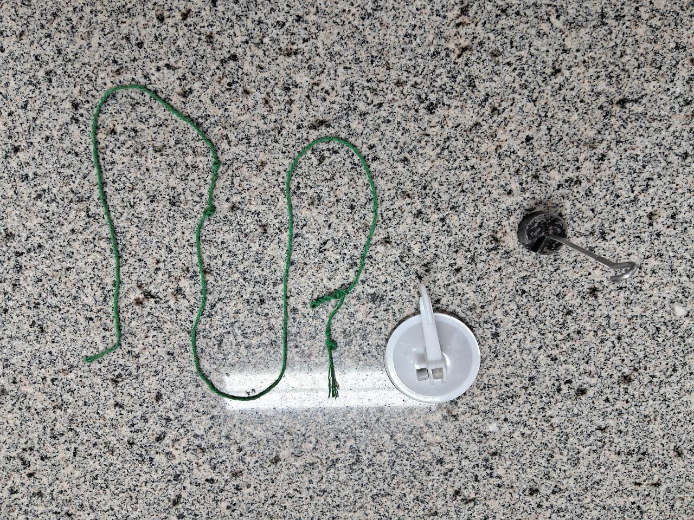
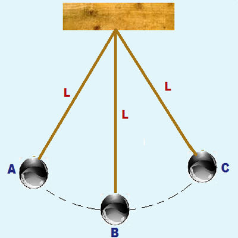
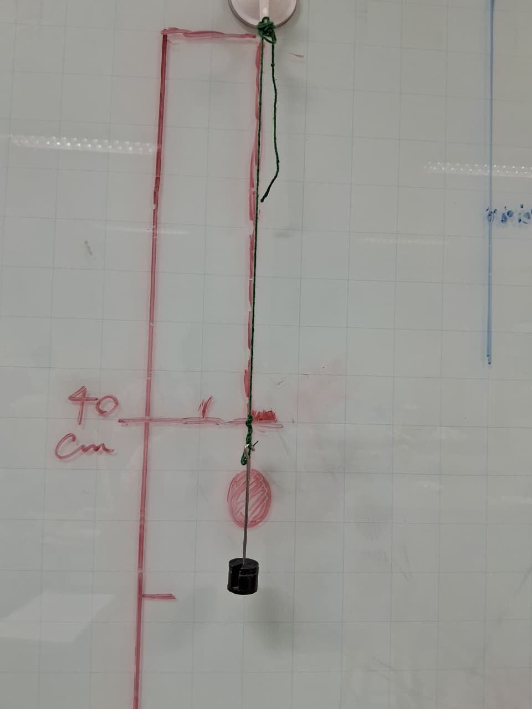
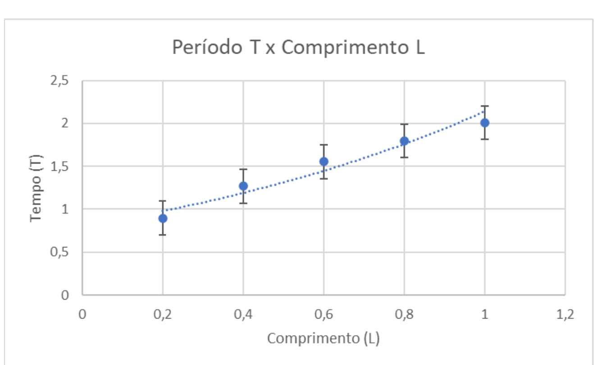
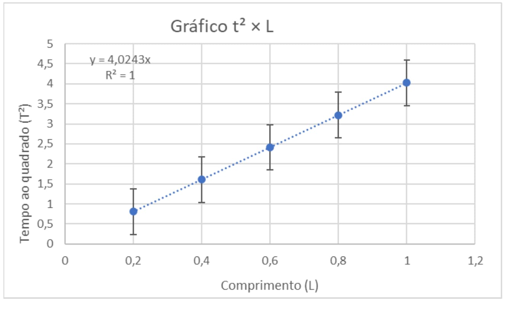
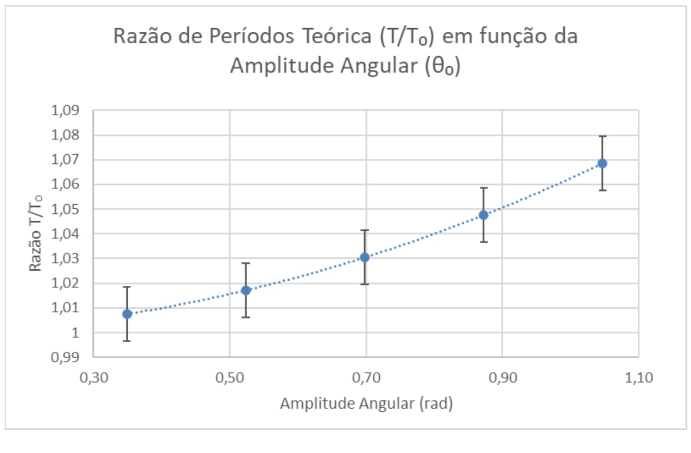
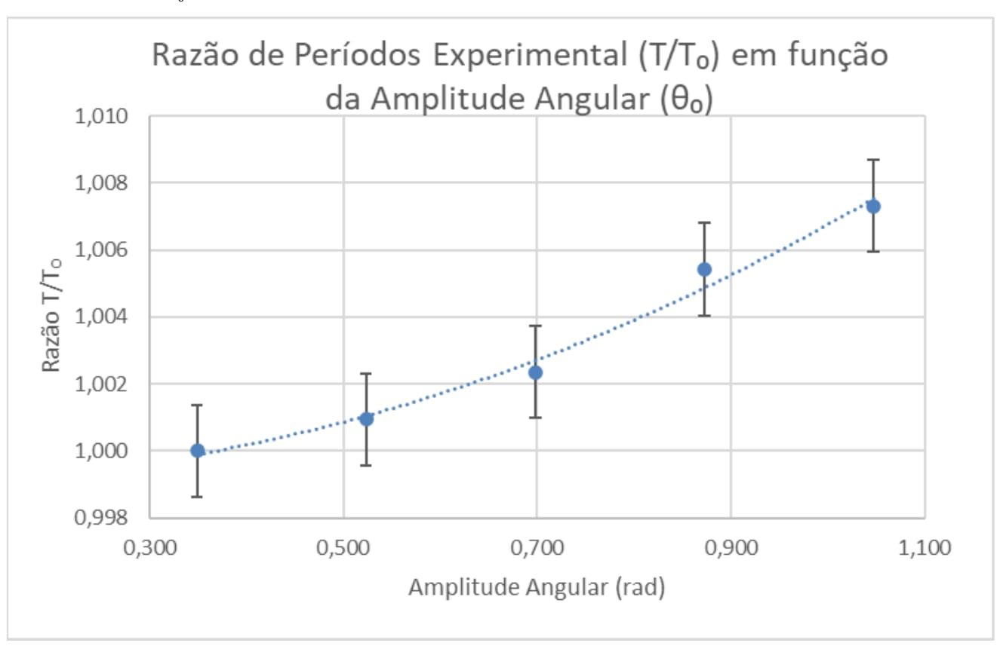

Hadassa Dhovanna Oliveria Adono
Integrante da equipe responsável pela realização do projeto experimental.
Projeto experimental · Física · 2026
Uma investigação experimental sobre o período de oscilação, o comprimento do fio, a massa suspensa e a amplitude angular.
Instituto Federal de Mato Grosso do Sul
Campus Três Lagoas
01 / Integrantes
Trabalho experimental de Física desenvolvido no Instituto Federal de Mato Grosso do Sul, Campus Três Lagoas.
Integrante da equipe responsável pela realização do projeto experimental.
Integrante da equipe responsável pela realização do projeto experimental.
Integrante da equipe responsável pela realização do projeto experimental.
02 / Apresentação
O pêndulo simples é um sistema físico formado por um corpo suspenso por um fio, capaz de realizar movimentos oscilatórios quando afastado de sua posição de equilíbrio e liberado.
O estudo desse sistema permite investigar como o período de oscilação se relaciona com o comprimento do fio, a massa suspensa e o ângulo inicial. A comparação entre os resultados experimentais e as previsões teóricas ajuda a compreender as condições de validade do modelo físico.
Investigar experimentalmente o movimento de um pêndulo simples e comparar as medições com o modelo teórico.
Comprimento do fio, massa do corpo suspenso e ângulo inicial de deslocamento.
Registrar tempos, calcular períodos, organizar os dados em tabelas e analisar os resultados graficamente.
03 / Física
O movimento do pêndulo simples pode ser aproximado por um movimento harmônico simples quando a amplitude angular é pequena e as condições do modelo são respeitadas.
Período de oscilação para pequenas amplitudes.
T
Período: tempo necessário para completar uma oscilação.
L
Comprimento efetivo do pêndulo, medido do ponto de suspensão ao centro de massa do corpo suspenso.
g
Aceleração da gravidade. O valor de referência usado no relatório é 9,81 m/s².
T² = (4π²/g)L
Forma linearizada que relaciona o quadrado do período ao comprimento do fio.
Ao representar T² em função de L, o modelo prevê uma relação linear. Se o coeficiente angular da reta for representado por m, então:
A aceleração da gravidade pode ser estimada a partir do coeficiente angular da reta experimental.
04 / Metodologia
O experimento foi organizado em etapas para observar separadamente os efeitos do comprimento, da massa e do ângulo inicial.
Gancho com ventosa, identificado no relatório como Gancho Ventosa Branco 1,0 kg Primafer.
Fio de barbante com comprimento mínimo de 0,20 m, massas de 50 g e suporte com acréscimo de 10 g.
Celular com cronômetro e transferidor, conforme os materiais indicados no relatório.



05 / Resultados
Os dados a seguir foram transcritos das tabelas do relatório experimental. Eles permitem comparar o comportamento do pêndulo em diferentes condições.
| L (m) | Tempo 1 (s) | Tempo 2 (s) | Tempo 3 (s) | Tempo 4 (s) | Tempo 5 (s) | T médio (s) | Dispersão (s) | T² | T² teórico | Dispersão (%) |
|---|---|---|---|---|---|---|---|---|---|---|
| 0,20 | 12,23 | 11,61 | 11,83 | 12,14 | 11,83 | 1,193 | 0,062 | 1,423 | 0,805 | 5,20 |
| 0,40 | 15,14 | 15,60 | 15,13 | 15,15 | 15,07 | 1,522 | 0,053 | 2,316 | 1,610 | 3,48 |
| 0,60 | 16,34 | 16,46 | 16,33 | 16,27 | 16,39 | 1,636 | 0,019 | 2,676 | 2,415 | 1,16 |
| 0,80 | 18,57 | 18,69 | 18,40 | 18,79 | 18,78 | 1,865 | 0,039 | 3,477 | 3,219 | 2,09 |
| 1,00 | 20,28 | 20,37 | 20,66 | 20,78 | 20,85 | 2,059 | 0,057 | 4,239 | 4,024 | 2,77 |
| Massa (g) | Tempo 1 (s) | Tempo 2 (s) | Tempo 3 (s) | Tempo 4 (s) | Tempo 5 (s) | T médio (s) | Dispersão (s) | T² | Diferença (%) |
|---|---|---|---|---|---|---|---|---|---|
| 80 | 14,12 | 14,10 | 14,01 | 14,05 | 13,95 | 1,405 | 0,017 | 1,974 | 0,070 |
| 100 | 13,99 | 13,99 | 14,14 | 14,17 | 14,13 | 1,408 | 0,018 | 1,982 | 0,140 |
| 120 | 14,07 | 14,12 | 14,06 | 13,93 | 14,07 | 1,405 | 0,019 | 1,974 | 0,070 |
| Ângulo (°) | Ângulo (rad) | Tempo 1 (s) | Tempo 2 (s) | Tempo 3 (s) | T médio (s) | T₀ (s) | T/T₀ | T teórico (s) | Diferença (%) | T/T₀ teórico |
|---|---|---|---|---|---|---|---|---|---|---|
| 20 | 0,349 | 14,12 | 14,12 | 14,18 | 1,414 | 1,414 | 1,000 | 1,425 | 0,756 | 1,0076 |
| 30 | 0,524 | 14,17 | 14,18 | 14,11 | 1,415 | 1,414 | 1,001 | 1,438 | 1,592 | 1,0171 |
| 40 | 0,698 | 14,19 | 14,16 | 14,17 | 1,417 | 1,414 | 1,002 | 1,457 | 2,727 | 1,0305 |
| 50 | 0,873 | 14,27 | 14,16 | 14,22 | 1,422 | 1,414 | 1,005 | 1,481 | 4,026 | 1,0476 |
| 60 | 1,047 | 14,31 | 14,12 | 14,30 | 1,424 | 1,414 | 1,007 | 1,511 | 5,730 | 1,0685 |
06 / Visualização
Gráficos originais extraídos do relatório experimental do pêndulo simples.




07 / Interpretação
Os dados experimentais permitem observar como o período varia conforme o comprimento, a massa e o ângulo inicial. A análise considera os valores registrados nas tabelas e sua relação com o modelo teórico do pêndulo simples.
Os dados mostram aumento do período médio à medida que o comprimento do fio aumenta. Esse comportamento está de acordo com a tendência prevista pelo modelo teórico: quanto maior o comprimento, maior o período de oscilação.
Os períodos médios registrados para as massas de 80 g, 100 g e 120 g são muito próximos. Isso é compatível com o modelo teórico, no qual a massa não aparece na equação do período do pêndulo simples.
Os resultados apresentam variações do período conforme o ângulo inicial aumenta. Para amplitudes maiores, a aproximação de pequenas oscilações torna-se menos precisa, o que pode contribuir para diferenças em relação à teoria.
O tempo de reação ao utilizar o cronômetro, a leitura do comprimento do fio, a determinação do ângulo inicial e as diferenças entre as repetições podem influenciar os resultados experimentais.
08 / Encerramento
O experimento do pêndulo simples permitiu investigar experimentalmente a relação entre o período de oscilação, o comprimento do fio, a massa suspensa e o ângulo inicial.
A variação do comprimento apresentou a tendência esperada: fios mais longos corresponderam a períodos maiores. Na comparação entre as massas, os períodos permaneceram próximos, resultado compatível com a expressão teórica do pêndulo simples.
Para os ângulos iniciais, os valores registrados mostraram variações no período, com diferenças de até 5,730% indicadas no relatório. Esse resultado destaca a importância de considerar as limitações da aproximação teórica para pequenas amplitudes.
Conclui-se que o experimento contribui para a compreensão do movimento oscilatório e demonstra a importância de medições repetidas, da análise gráfica e da avaliação das possíveis incertezas experimentais.
O modelo teórico do pêndulo simples, para pequenas amplitudes, é representado pela expressão:
T = 2π √(L/g)
Nessa expressão, T representa o período, L é o comprimento do fio e g é a aceleração da gravidade.